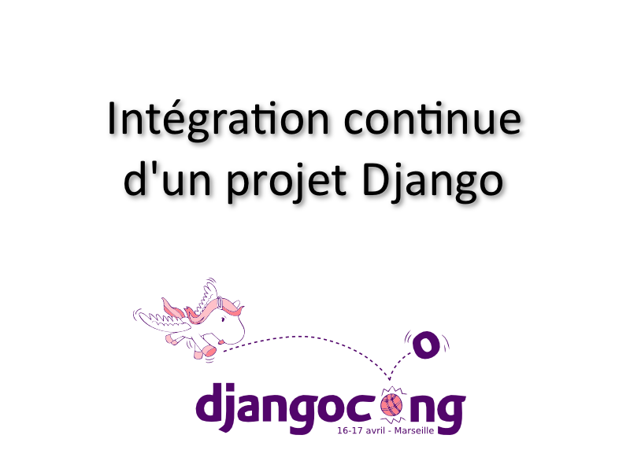

Python is a programming language that lets you work more quickly and integrate your systems more effectively. You can learn to use Python and see almost immediate gains in productivity and lower maintenance costs.
Python est un langage qui va te permettre de programmer plus rapidement et plus efficacement.
La syntaxe python est très simple, très concise et impose d'utiliser l'indentation des lignes de code ce qui rend les programmes plus faciles à lire.
1 if True:
2 print("Condition is true")
3
4 print("Outside condition")
Python est un langage à typage fort dynamique.
Un langage est fortement typé si :
1) La compilation ou l'exécution peuvent détecter des erreurs de typage. Si ces erreurs ne sont jamais reconnues, le langage est faiblement typé (c'est, par exemple, le cas de PHP).
2) Les conversions implicites de types sont formellement interdites. Si de telles conversions sont possibles, le langage est faiblement typé. Exemples répondant à ce critère : OCaml, Haskell.
Un langage est typé dynamiquement si la déclaration des variables se fait sans spécifier le type.
Python est avant tout un langage objet, même si il permet d'utiliser d'autres paradigmes que la programmation orientée objet, au final on ne manipule que des objets en Python (C'est très important et on le reverra plus tard.).
Voici quelques ouvrages qui vous seront sûrement utiles lors de votre apprentissage du langage :
Voici l'exemple classique du Hello World en python
1 # -*- coding: utf-8 -*-
2
3 print("Hello World !")
1 $ python hello_world.py
2 Hello World !
| Table of Contents | t |
|---|---|
| Exposé | ESC |
| Source Files | s |
| Slide Numbers | n |
| Notes | 2 |
| Help | h |